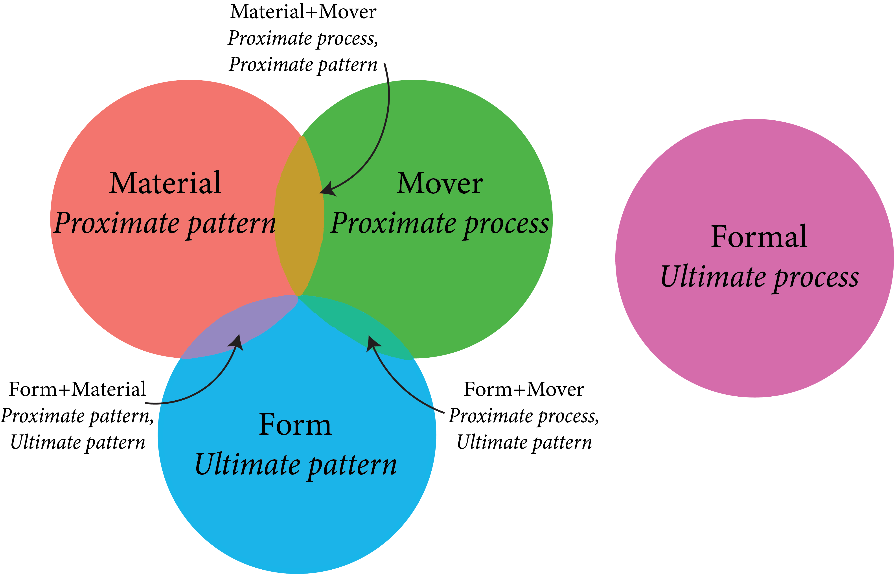
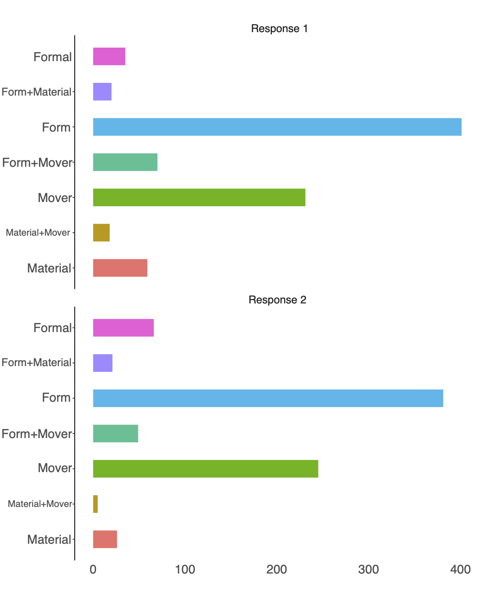

class: right, middle, bg_cherry # The Four Causes of <br/> Adaptation <br/> .pull-right[ .border[ We do not have knowledge of a thing until we have grasped its <b>why</b>, that is to say, its <b>cause</b>.] Aristotle, <br/> _Physics: Book II_] .pull-bottom[Lucy E Delaney ¬∑ MEEC, 2021] ??? hi there, i'm so glad to be here. today i'm going to talk to you about a project that i started in the Fall, examining how students think about complex questions regarding natural selection & adaptation. --- class: left, middle, bg_munich .pull-left[## Lucy Delaney <img style="border-radius: 50%;" src="https://ledelaney.org/talks/sabertalk/css/images/Delaney-Headshot-Original.jpg" width="170px"/> [<svg style="height:0.8em;top:.04em;position:relative;" viewBox="0 0 512 512"><path d="M502.3 190.8c3.9-3.1 9.7-.2 9.7 4.7V400c0 26.5-21.5 48-48 48H48c-26.5 0-48-21.5-48-48V195.6c0-5 5.7-7.8 9.7-4.7 22.4 17.4 52.1 39.5 154.1 113.6 21.1 15.4 56.7 47.8 92.2 47.6 35.7.3 72-32.8 92.3-47.6 102-74.1 131.6-96.3 154-113.7zM256 320c23.2.4 56.6-29.2 73.4-41.4 132.7-96.3 142.8-104.7 173.4-128.7 5.8-4.5 9.2-11.5 9.2-18.9v-19c0-26.5-21.5-48-48-48H48C21.5 64 0 85.5 0 112v19c0 7.4 3.4 14.3 9.2 18.9 30.6 23.9 40.7 32.4 173.4 128.7 16.8 12.2 50.2 41.8 73.4 41.4z"/></svg> ldelan5@uic.edu](mailto:ldelan5@uic.edu) [<svg style="height:0.8em;top:.04em;position:relative;" viewBox="0 0 512 512"><path d="M459.37 151.716c.325 4.548.325 9.097.325 13.645 0 138.72-105.583 298.558-298.558 298.558-59.452 0-114.68-17.219-161.137-47.106 8.447.974 16.568 1.299 25.34 1.299 49.055 0 94.213-16.568 130.274-44.832-46.132-.975-84.792-31.188-98.112-72.772 6.498.974 12.995 1.624 19.818 1.624 9.421 0 18.843-1.3 27.614-3.573-48.081-9.747-84.143-51.98-84.143-102.985v-1.299c13.969 7.797 30.214 12.67 47.431 13.319-28.264-18.843-46.781-51.005-46.781-87.391 0-19.492 5.197-37.36 14.294-52.954 51.655 63.675 129.3 105.258 216.365 109.807-1.624-7.797-2.599-15.918-2.599-24.04 0-57.828 46.782-104.934 104.934-104.934 30.213 0 57.502 12.67 76.67 33.137 23.715-4.548 46.456-13.32 66.599-25.34-7.798 24.366-24.366 44.833-46.132 57.827 21.117-2.273 41.584-8.122 60.426-16.243-14.292 20.791-32.161 39.308-52.628 54.253z"/></svg> @emergentlyLucy](https://twitter.com/emergentlyLucy) [<svg style="height:0.8em;top:.04em;position:relative;" viewBox="0 0 496 512"><path d="M165.9 397.4c0 2-2.3 3.6-5.2 3.6-3.3.3-5.6-1.3-5.6-3.6 0-2 2.3-3.6 5.2-3.6 3-.3 5.6 1.3 5.6 3.6zm-31.1-4.5c-.7 2 1.3 4.3 4.3 4.9 2.6 1 5.6 0 6.2-2s-1.3-4.3-4.3-5.2c-2.6-.7-5.5.3-6.2 2.3zm44.2-1.7c-2.9.7-4.9 2.6-4.6 4.9.3 2 2.9 3.3 5.9 2.6 2.9-.7 4.9-2.6 4.6-4.6-.3-1.9-3-3.2-5.9-2.9zM244.8 8C106.1 8 0 113.3 0 252c0 110.9 69.8 205.8 169.5 239.2 12.8 2.3 17.3-5.6 17.3-12.1 0-6.2-.3-40.4-.3-61.4 0 0-70 15-84.7-29.8 0 0-11.4-29.1-27.8-36.6 0 0-22.9-15.7 1.6-15.4 0 0 24.9 2 38.6 25.8 21.9 38.6 58.6 27.5 72.9 20.9 2.3-16 8.8-27.1 16-33.7-55.9-6.2-112.3-14.3-112.3-110.5 0-27.5 7.6-41.3 23.6-58.9-2.6-6.5-11.1-33.3 2.6-67.9 20.9-6.5 69 27 69 27 20-5.6 41.5-8.5 62.8-8.5s42.8 2.9 62.8 8.5c0 0 48.1-33.6 69-27 13.7 34.7 5.2 61.4 2.6 67.9 16 17.7 25.8 31.5 25.8 58.9 0 96.5-58.9 104.2-114.8 110.5 9.2 7.9 17 22.9 17 46.4 0 33.7-.3 75.4-.3 83.6 0 6.5 4.6 14.4 17.3 12.1C428.2 457.8 496 362.9 496 252 496 113.3 383.5 8 244.8 8zM97.2 352.9c-1.3 1-1 3.3.7 5.2 1.6 1.6 3.9 2.3 5.2 1 1.3-1 1-3.3-.7-5.2-1.6-1.6-3.9-2.3-5.2-1zm-10.8-8.1c-.7 1.3.3 2.9 2.3 3.9 1.6 1 3.6.7 4.3-.7.7-1.3-.3-2.9-2.3-3.9-2-.6-3.6-.3-4.3.7zm32.4 35.6c-1.6 1.3-1 4.3 1.3 6.2 2.3 2.3 5.2 2.6 6.5 1 1.3-1.3.7-4.3-1.3-6.2-2.2-2.3-5.2-2.6-6.5-1zm-11.4-14.7c-1.6 1-1.6 3.6 0 5.9 1.6 2.3 4.3 3.3 5.6 2.3 1.6-1.3 1.6-3.9 0-6.2-1.4-2.3-4-3.3-5.6-2z"/></svg> @ledelaney](https:://github.com/ledelaney)] -- .pull-right[## About me üéì .medium-font[PhD candidate in Evolutionary Biology] <br/> <br/> üå∫ .medium-font[Studying plant sex macroevolution] <br/> <br/> üê£ .medium-font[Interested in better biology education]] -- .pull-bottom[ Link to all slide materials: https://github.com/ledelaney/03-21-MEEC] -- ??? my name is lucy, i'm a phd candidate in evolutionary biology. most of my thesis concerns plant sex macroevolution, but toward the end of my thesis i became interested in better biology education --- class: left, bg_totoro ??? i don't think it would be controversial to say that biology education is important: can foster care&appreciation for the natural world, help to create empathetic&engaged citizens that value and understand how we are all connected, and bolster scientific&computational literacy... BUT... -- ## Biology education has a problem <br/> <br/> <br/> .footnote[ Momsen _et al._, 2010] -- <i class="far fa-tired"></i> Biology is “just memorization!” <br/> .footnote[ Momsen _et al._, 2010] ??? within classes: often taught as a series of facts or examples, devoid of connection -- <i class="far fa-grin-stars"></i> Formal instruction is not always leading to robust conceptual understanding <br/> <br/> <br/> <br/> .footnote[ Momsen _et al._, 2010; Coley & Tanner, 2015] ??? briefly explain what we mean by conceptual understanding.... between classes: biology education is fractured, teaching each course sioled as if its a discipline all its own why do these things matter? well... --- class: middle, center, bg_gorg -- .mezzo-forte-font[ M EECN AS ADN ANC AA AC LUM K] .footnote[ Heath & Heath, 2007] --- class: middle, center, bg_gorg .footnote[ Heath & Heath, 2007] -- .mezzo-forte-font[ M EECN AS ADN ANC AA AC LUM K] .footnote[ Heath & Heath, 2007] --- class: middle, center, bg_gorg .footnote[ Heath & Heath, 2007] -- .mezzo-forte-font[ MEEC NASA DNA NCAA ACLU MLK] .footnote[ Heath & Heath, 2007] --- class: middle, center, bg_gorg .footnote[ Heath & Heath, 2007] -- .mezzo-forte-font[ MEEC NASA DNA NCAA ACLU MLK] .footnote[ Heath & Heath, 2007] -- .pull-bottom[ .large-font[ .blue[Remembering concepts is far easier than remembering raw data!]]] .footnote[ Heath & Heath, 2007] ??? spend 10-15 seconds studying, try to memorize as many as possible.. ok now try... --- class: middle, center, bg_sakcherry <br/> ## Evolutionary theory is the concept behind the raw data -- .large-font[ ü¶† üåæ üê° ü™≤ ü¶ß] ??? Its the framework and narrative for the entire discipline. But, ususally save it for its own class or half of an e+e class Is it surprising that students have such a hard time integrating all this raw data to form a robust conceptual framework in biology? Like teaching literature by having a class on letters, a class on words, a class on book binding, a class on sentences... and saving reading books for an elective class at the end of study. --- class: middle, bg_mountain1 ??? BUT if we want to get to the summit that is understanding evolution there's a long path to traverse... --- class: middle, bg_mountain2 ??? first, we all need to speak the same words... --- class: middle, bg_mountain3 ??? then we need to use those words to understand basic individual-level biological processes like DNA replication... --- class: middle, bg_mountain4 ??? now we can begin to talk about the environment and ecology... --- class: middle, bg_mountain5 ??? then, we must start thinking about randomness, probability, and timescale: what processes may yield over millions of years... --- class: middle, bg_mountain6 ??? now we are about ready to bring in evolutionary mechanisms, which conceptually bring their own challenges... --- class: middle, bg_mountain7 ??? we must learn to distinguish the pattern from the process that generates it... --- class: middle, bg_mountain8 ??? and finally, we must distinguish levels of causality, functional and evolutionary (not mentioning correlation/causation, another talk) given these two final stages, i set out to answer some questions --- class: middle, left, bg_peacock -- <i class="fas fa-tools"></i> How do students construct biological explanations about complex phenomena? -- <i class="fas fa-chart-line"></i> Does instruction improve outcomes? ??? chose natural selection and adaptation as a pattern/process based concept that students are generally familiar with: also, very powerful aspect of understanding evolution generally as evidenced by darwin coming up with his theory without understanding mechanisms of inheritance, pop gen, etc. --- class: middle, bg_butterfly ## Study design -- üñê open-ended questions -- ‚úåÔ∏è weeks to answer -- ‚òùÔ∏è at the beginning of the semester, ‚òùÔ∏è at the end ??? first: four classes from 100- to 400-level gave two weeks to answer five open-ended questions for homework, allowed to use resources and cite completed once in the first two weeks of classes and once in the last coded responses based on the following framework... --- class: middle, left, bg_jelly ## Tinbergen’s Four Questions .opaque[ Instead of having one species perfectly adapted to life on earth, there are millions of different species. Why is this the case?] <br/> -- <table> <tr> <th> </th> <th>PATTERN (static)</th> <th>PROCESS (dynamic)</th> </tr> <tr> <th>PROXIMATE (individual)</th> <td> <span style="opacity: 0"> <br/> <b>Material:</b> <br/> <br/> Organisms are constructed differently, have different DNA <br/> <br/> </span> </td> <td> <span style="opacity: 0"> <br/> <b>Mover:</b> <br/> <br/> DNA mutates, many organisms sexually reproduce, recombination <br/> <br/> </span> </td> </tr> <tr> <th>ULTIMATE (species)</th> <td> <span style="opacity: 0"> <br/> <b>Form:</b> <br/> <br/> Organisms take advantage of the environment in different ways <br/> <br/> </span> </td> <td> <span style="opacity: 0"> <br/> <b>Formal:</b> <br/> <br/> Environmental heterogeneity and biological tradeoffs plus large timescales <br/> <br/> </span> </td> </tr> </table> .footnote[ .small-font[Aristotle; Tinbergen, 1963; Nesse, 2013]] ??? slightly tweaked a framework originally created by Niko Tinbergen that is most commonly used to examine behavioral adaptations here is an example of one of the assignment questions: Instead of having one species perfectly adapted to life on earth, there are millions of different species. Why is this the case? --- class: middle, left, bg_jelly ## Tinbergen’s Four Questions Instead of having one species perfectly adapted to life on earth, there are millions of different species. Why is this the case? <br/> <table> <tr> <th> </th> <th>PATTERN (static)</th> <th>PROCESS (dynamic)</th> </tr> <tr> <th>PROXIMATE (individual)</th> <td> <span style="opacity: 0"> <br/> <b>Material:</b> <br/> <br/> Organisms are constructed differently, have different DNA <br/> <br/> </span> </td> <td> <span style="opacity: 0"> <br/> <b>Mover:</b> <br/> <br/> DNA mutates, many organisms sexually reproduce, recombination <br/> <br/> </span> </td> </tr> <tr> <th>ULTIMATE (species)</th> <td> <span style="opacity: 0"> <br/> <b>Form:</b> <br/> <br/> Organisms take advantage of the environment in different ways <br/> <br/> </span> </td> <td> <span style="opacity: 0"> <br/> <b>Formal:</b> <br/> <br/> Environmental heterogeneity and biological tradeoffs plus large timescales <br/> <br/> </span> </td> </tr> </table> .footnote[ .small-font[Aristotle; Tinbergen, 1963; Nesse, 2013]] --- class: middle, left, bg_jelly ## Tinbergen’s Four Questions Instead of having one species perfectly adapted to life on earth, there are millions of different species. Why is this the case? <br/> <table> <tr> <th> </th> <th>PATTERN (static)</th> <th>PROCESS (dynamic)</th> </tr> <tr> <th>PROXIMATE (individual)</th> <td> <span style="opacity: 1"> <br/> <b>Material:</b> <br/> <br/> Organisms are constructed differently, have different DNA <br/> <br/> </span> </td> <td> <span style="opacity: 0"> <br/> <b>Mover:</b> <br/> <br/> DNA mutates, many organisms sexually reproduce, recombination <br/> <br/> </span> </td> </tr> <tr> <th>ULTIMATE (species)</th> <td> <span style="opacity: 0"> <br/> <b>Form:</b> <br/> <br/> Organisms take advantage of the environment in different ways <br/> <br/> </span> </td> <td> <span style="opacity: 0"> <br/> <b>Formal:</b> <br/> <br/> Environmental heterogeneity and biological tradeoffs plus large timescales <br/> <br/> </span> </td> </tr> </table> .footnote[ .small-font[Aristotle; Tinbergen, 1963; Nesse, 2013]] ??? let's talk through the proximate/functional (or individual-level) row first: -material cause addresses proximate-pattern: all organisms have different DNA, constructed differently --- class: middle, left, bg_jelly ## Tinbergen’s Four Questions Instead of having one species perfectly adapted to life on earth, there are millions of different species. Why is this the case? <br/> <table> <tr> <th> </th> <th>PATTERN (static)</th> <th>PROCESS (dynamic)</th> </tr> <tr> <th>PROXIMATE (individual)</th> <td> <span style="opacity: 1"> <br/> <b>Material:</b> <br/> <br/> Organisms are constructed differently, have different DNA <br/> <br/> </span> </td> <td> <span style="opacity: 1"> <br/> <b>Mover:</b> <br/> <br/> DNA mutates, many organisms sexually reproduce, recombination <br/> <br/> </span> </td> </tr> <tr> <th>ULTIMATE (species)</th> <td> <span style="opacity: 0"> <br/> <b>Form:</b> <br/> <br/> Organisms take advantage of the environment in different ways <br/> <br/> </span> </td> <td> <span style="opacity: 0"> <br/> <b>Formal:</b> <br/> <br/> Environmental heterogeneity and biological tradeoffs plus large timescales <br/> <br/> </span> </td> </tr> </table> .footnote[ .small-font[Aristotle; Tinbergen, 1963; Nesse, 2013]] ??? -efficient cause is the proximate-process: DNA mutates, sexual reproduction/recombination --- class: middle, left, bg_jelly ## Tinbergen’s Four Questions Instead of having one species perfectly adapted to life on earth, there are millions of different species. Why is this the case? <br/> <table> <tr> <th> </th> <th>PATTERN (static)</th> <th>PROCESS (dynamic)</th> </tr> <tr> <th>PROXIMATE (individual)</th> <td> <span style="opacity: 1"> <br/> <b>Material:</b> <br/> <br/> Organisms are constructed differently, have different DNA <br/> <br/> </span> </td> <td> <span style="opacity: 1"> <br/> <b>Mover:</b> <br/> <br/> DNA mutates, many organisms sexually reproduce, recombination <br/> <br/> </span> </td> </tr> <tr> <th>ULTIMATE (species)</th> <td> <span style="opacity: 1"> <br/> <b>Form:</b> <br/> <br/> Organisms take advantage of the environment in different ways <br/> <br/> </span> </td> <td> <span style="opacity: 0"> <br/> <b>Formal:</b> <br/> <br/> Environmental heterogeneity and biological tradeoffs plus large timescales <br/> <br/> </span> </td> </tr> </table> .footnote[ .small-font[Aristotle; Tinbergen, 1963; Nesse, 2013]] ??? now the ultimate/evolutionary (or species-level) row: -final cause ultimate-pattern (dangerously teleological, but that's a discussion for another time): all organisms take advantage of the environment in different ways --- class: middle, left, bg_jelly ## Tinbergen’s Four Questions Instead of having one species perfectly adapted to life on earth, there are millions of different species. Why is this the case? <br/> <table> <tr> <th> </th> <th>PATTERN (static)</th> <th>PROCESS (dynamic)</th> </tr> <tr> <th>PROXIMATE (individual)</th> <td> <span style="opacity: 1"> <br/> <b>Material:</b> <br/> <br/> Organisms are constructed differently, have different DNA <br/> <br/> </span> </td> <td> <span style="opacity: 1"> <br/> <b>Mover:</b> <br/> <br/> DNA mutates, many organisms sexually reproduce, recombination <br/> <br/> </span> </td> </tr> <tr> <th>ULTIMATE (species)</th> <td> <span style="opacity: 1"> <br/> <b>Form:</b> <br/> <br/> Organisms take advantage of the environment in different ways <br/> <br/> </span> </td> <td> <span style="opacity: 1"> <br/> <b>Formal:</b> <br/> <br/> Environmental heterogeneity and biological tradeoffs plus large timescales <br/> <br/> </span> </td> </tr> </table> .footnote[ .small-font[Aristotle; Tinbergen, 1963; Nesse, 2013]] ??? -formal cause ultimate-process (THE ANSWER WE WANT!): environmental heterogeneity + biological tradeoffs over large timescales and what we were looking for in the students' responses is the FORMAL cause -- the ultimate process responsible, the full evolutionary history of the trait and organism coded responses based on what level of explanation the student addressed in response (sometimes more than one) --- class: middle, left ## What happened? --  ??? Answers a mess: formal instruction is not helping! Very few students getting formal cause: some even move away from formal after instruction! Often pairing proximate processes with ultimate patterns Talk about how research shows that we spend way too much time on proximate in classes, so this makes perfect sense.. and then in evolution classes we spend way too much time using EXAMPLES highlighting ultimate pattern --- class: middle, left ## What happened? .pull-left[ ] .pull-right-low[ ] --- class: middle, left ## What happened? .pull-left[ ] .pull-right-low[ ] --- class: middle, left ## What happened? .pull-left[ ] .pull-right-low[ ] --- class: middle, left ## What happened? .pull-left[ ] .pull-right-low[ ] --- class: top, left, bg_chaet <br/> ## How are students constructing explanations? -- .pull-right[ .large-font[ .pink[ Schemas!]]] ??? Tend to use a familiar schema to reason about answers explain schemas --- class: top, left, bg_chaet <br/> ### Reasoning by way of analogy to humans (anthropocentric): <br/> <br/> -- _There are so many different species of flowering plants because flowers are found all over the world just like humans, and they look different just like humans do._ <br/> <br/> --- class: top, left, bg_chaet <br/> ### Reasoning by way of analogy to humans (anthropocentric): <br/> <br/> _Cave fish lose their eyesight because if you don’t use something the body will not maintain it, like if you stop exercising you lose your muscles._ <br/> <br/> --- class: top, left, bg_chaet <br/> ### Reasoning by way of justifying the outcome (teleological): <br/> <br/> -- <br/> _There are so many different species on earth because if there were only one it would go extinct._ <br/> <br/> --- class: top, left, bg_chaet <br/> ### Reasoning by way of justifying the outcome (teleological): <br/> <br/> <br/> _Wood evolved because plants need it to survive in their environment._ <br/> <br/> -- .pull-right[ .large-font[ .pink[ Here, schemas are working against us!]]] --- class: middle, left, bg_2birds ## Using schemas to our advantage -- ```r coin.flip <- function(n){ flips <- rbinom(n = n, size = 1, prob = 0.5) outcome <- ifelse(flips == 1, yes = "Heads", no = "Tails") table <- table(outcome) / n return(table) } ``` --- class: middle, left, bg_2birds ## Using schemas to our advantage ```r coin.flip(n = 6) ``` ``` ## outcome ## Heads Tails ## 0.5 0.5 ``` --- class: middle, left, bg_2birds ## Using schemas to our advantage ```r coin.flip(n = 150) ``` ``` ## outcome ## Heads Tails ## 0.5333333 0.4666667 ``` --- class: middle, left, bg_2birds ## Using schemas to our advantage ```r coin.flip(n = 10000) ``` ``` ## outcome ## Heads Tails ## 0.5044 0.4956 ``` --- class: top, center, bg_gurnard ## Toward better biology education -- .large-font[ <i class="fas fa-map-marked-alt"></i>] .left-align[ Always bring facts and examples back to the bigger picture] ??? and help students form connections --- class: top, center, bg_gurnard ## Toward better biology education .large-font[ <i class="fas fa-map-marked-alt"></i> <i class="fas fa-code"></i>] .left-align[ Always bring facts and examples back to the bigger picture Deal in concepts not in raw data] --- class: top, center, bg_gurnard ## Toward better biology education .large-font[ <i class="fas fa-map-marked-alt"></i> <i class="fas fa-code"></i> <i class="fas fa-icons"></i>] .left-align[ Always bring facts and examples back to the bigger picture Deal in concepts not in raw data Use existing schemas to engage and challenge student thinking] -- .bottom[ .large-font[ .pink[Thank you!]]]